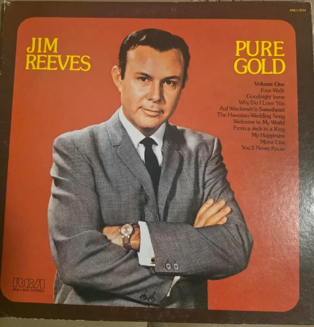

Vinyl Records
Jim Reeves - Pure Gold Volume One - Vinyl LP Record - Used
$8.00💳 Buy now with card
Gentleman Jim's smooth, velvet-voiced country classics on vinyl. Pure Gold Volume One (RCA, ANL1-3014, stereo) collects ten favorites including "Four Walls", "Welcome to My World" and "From a Jack to a King".
Features & benefits
- 12" vinyl LP record, in its sleeve
- RCA ANL1-3014, stereo
- Tracks: Four Walls, Goodnight Irene, Why Do I Love You, Auf Wiederseh'n Sweetheart, The Hawaiian Wedding Song, Welcome to My World, From a Jack to a King, My Happiness, Mona Lisa, You'll Never Know
- Pre-owned: see photo for the cover's condition
- 🔒 Secure checkout
- 🚚 Ships from Denver, Colorado (USA)
- ↩️ 30-day returns
Questions? Call or text +1 720 799 4089 or email info@akiliwomarketplace.com